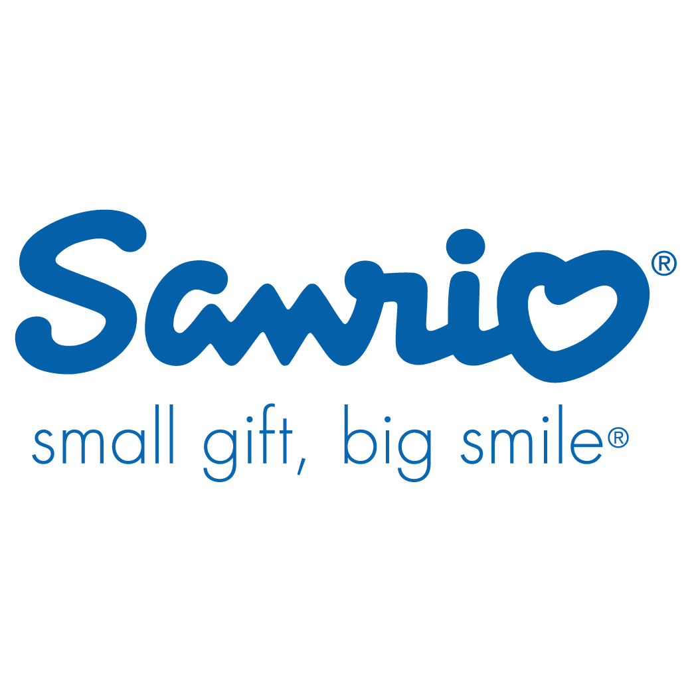
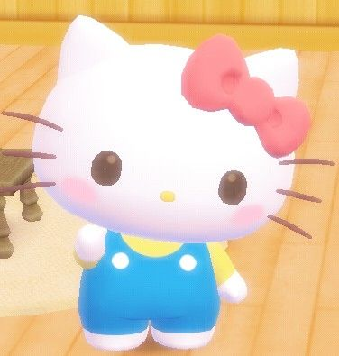
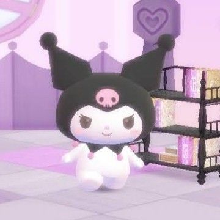
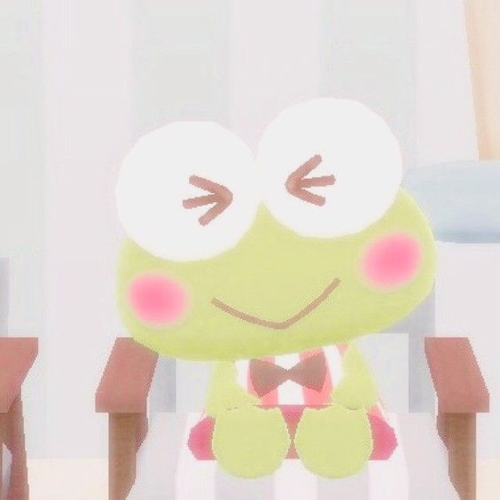
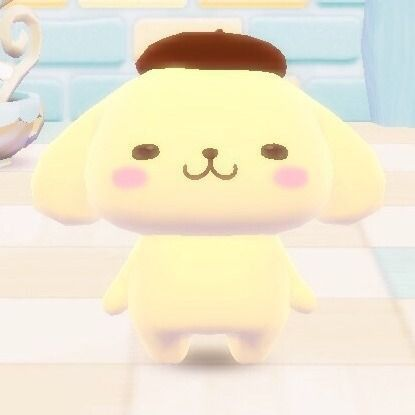
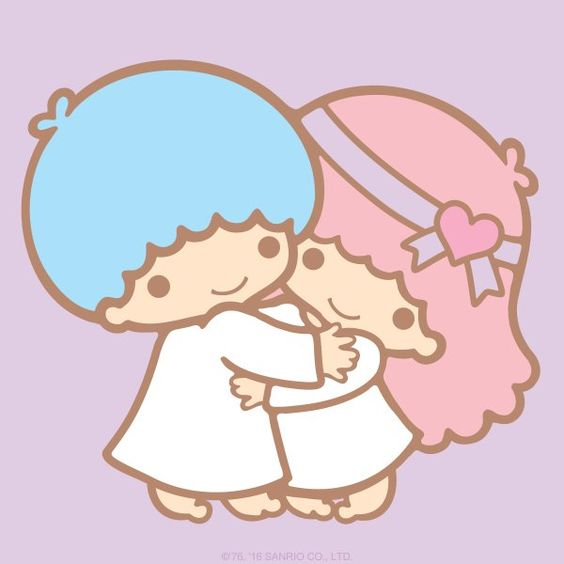
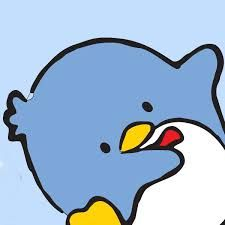

sanrio!
¿Qué es Sanrio?
Sanrio es una empresa japonesa creadora de algunos de los personajes más icónicos de nuestra infancia
como es el caso de Hello Kitty. Esta empresa fue fundada en el año 1960 por Shintaro Tsuji en Japón.

Personajes de sanrio
Hello Kitty:
Hello kitty nación en los suburbios de Londres en el año
1990, vive con su madre, su padre y su hermanita Mimi, usa
un lindo moño rojo en su orejita y le gusta jugar con sus
amigos.

My Melody:
My melody es casi tan conopcida como Hello Kitty, hace poco
se celebró su aniversario de 40 años desde que esta linda conejita
debutó. Nació en un bosque de Mariland, le gusta hornear galletas
con su madre y su comida favorita es la torta de almendras y le encanta
comer pastelitos con su mejor amigo, un ratoncito llamado Flat.

Kuromi:
Es la rival de My Melody, es una conejita blanca con cola similar a la de
un diablito. Viste un gorro negro de bufón con una calavera rosa en la mitad,
la expresión facial de la calavera cambia para coincidir con el estado de ánimo de Kuromi.
su cumpleaños es el mismísimo 31 de octubre (en halloween) La apariencia de Kuromi también
es similar a la de los personajes de dibujos animados de la década de 1990, como Pichu de
Pokémon. Kuromi se ha convertido en un personaje popular para el punk, la escena y las
multitudes góticas debido a su apariencia.

Cinnamorroll:
Es la mascota oficial de "café cinnamon, es bastante tímido pero muy amable,
puede volar en el arie cuando agita sus grandes orejas y muchos no saben que
en realidad él es un perrito.

Keroppi
Keroppi vive con su hermano, su hermana y sus padres en una casa grande en
el borde de Donut Pond, el estanque más grande y más azul. Los amigos de Keroppi
comparten su amor por los juegos, especialmente el béisbol y los boomerangs.

Pompompurin
Este golden retriever es inconfundible en su boina marrón de marca registrada.
Él tiene un comportamiento relajado y ama la frase "vamos a salir!". Le encanta
la leche, cualquier cosa suave, y los pudines de crema de caramelo de su mamá.
Duerme mucho y es muy amigable. Su sueño es ser aún más grande.

Little Twin Stars
Kiki y Lala son dos estrellas gemelas nacidas en la Estrella de Omoiyari.
Viajaron un largo camino hacia la Tierra para aprender a ser las mejores
y más brillantes estrellas. Lala es la mayor, le encanta dibujar y escribir
poemas, y es una gran cocinera. Kiki está lleno de curiosidad sobre todo,
lo que lo hace un poco apresurado a veces.

Tuxedo Sam
es un personaje pingüino de la compañía japonesa Sanrio . Es un pequeño
torpe al que le encanta comer. Tuxedo Sam tiene un gran sentido de la
moda, posee 365 pajaritas. También es muy bueno hablando inglés.

pochacco
Está dibujado como un perro blanco con orejas caídas negras, pero sin boca
visible. A menudo se viste con ropa deportiva, ya que tiene una personalidad
deportiva y juguetona.
En los primeros años de la vida de Pochacco, se le conocía como
"El Perro Yorimichi". Le encanta el baloncesto y el fútbol, pero
a mediados de la década de 1990 empezó a andar en patineta. Aunque camina erguido,
todavía le cuesta mucho tropezar consigo mismo; por lo general resulta en lesiones
en la cabeza con una acumulación de vendajes. Aparentemente, este problema se resolvió
en una encarnación reciente de él, ya que se lo ve con un scooter.